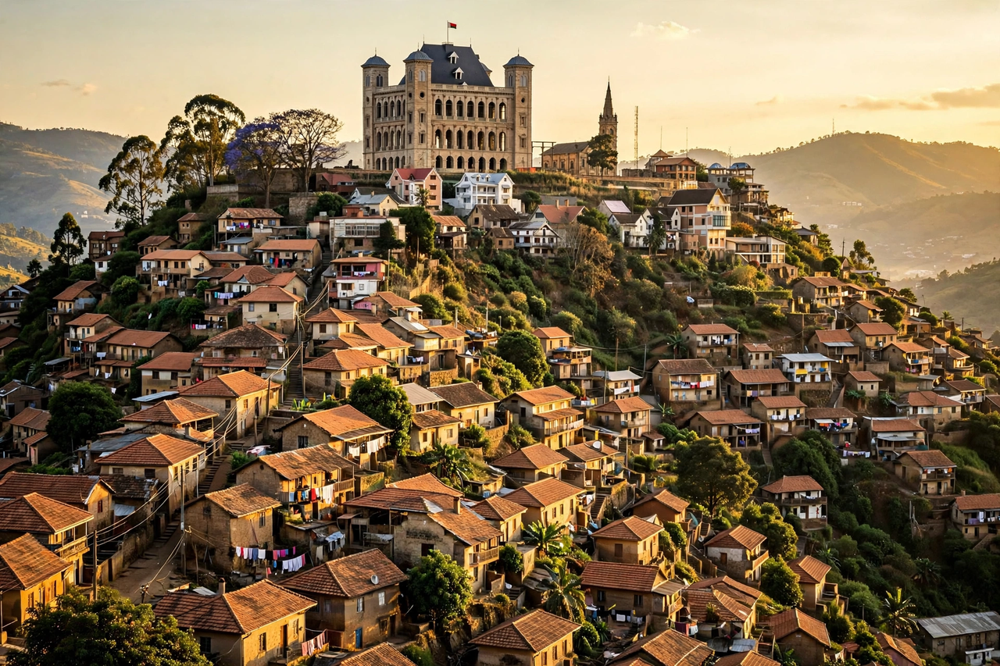

[Image placeholder: The Rova palace above Antananarivo]| Country | Madagascar |
|---|---|
| Region | Analamanga |
| Elevation | About 1,276 m |
| Population | About 1.3 million city; metro around 3 million, estimates |
| Founded | Early 17th century |
**Antananarivo** is the capital and largest city of Madagascar, located in the island's Central Highlands. Often shortened to 'Tana', it was founded in the early seventeenth century by King Andrianjaka, who stationed a garrison of about a thousand soldiers there — the name means 'city of the thousand'.
The city climbs steep hills crowned by the Rova, the royal palace complex of the Merina kingdom, whose wooden palace was gutted by fire in 1995 and has been under reconstruction. Below it lies Lake Anosy and dense neighbourhoods famous for their congestion and colourfully painted houses.
Antananarivo became capital of the expanding Merina kingdom in the late eighteenth century and of a unified Madagascar under Radama I. France captured the city in 1895 and colonised the island; Madagascar regained independence in 1960 with Antananarivo as capital. The city has repeatedly been the focus of political crises, including the 2009 protests.
The city hosts most of Madagascar's industry, its main university and Ivato International Airport. Markets overflow with vanilla, gemstones and handicrafts; traffic of vintage French cars and pousse-pousses is notorious. Malagasy cuisine here centres on rice, served with zebu, greens and hot sakay sauce.